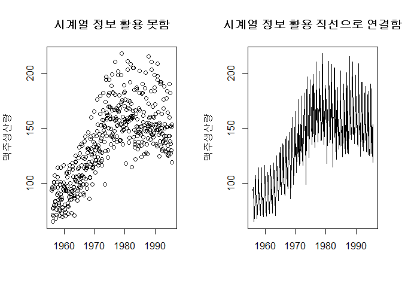

데이터 과학 – 기초 통계
시계열 모형 - 기초
학습 목표
- 시계열 데이터를 이해한다.
- 시계열 데이터 분석 기본 모형을 살펴본다.
1. 시계열 데이터
시계열 데이터(time series)는 시간 순서로 배열된 데이터의 한 종류로 시간에 걸쳐 순차적으로 기록된다. 시계열 데이터는 널려있다고 해도 과언은 아니다. 주식수익률 데이터를 포함한 재무데이터, 인플레이션, 소비자 물가를 포함한 각종 경제 관련 데이터 및 시간순으로 정당 지지율도 대표적인 시계열 데이터가 된다.
1.1. 시계열 데이터 자료구조 1
| 팩키지 | 시계열 객체 | 상세 설명 |
|---|---|---|
| fts | fts |
C++ 시계열 라이브러리 tslib에 대한 R 인터페이스 |
| its | its |
불규칙 시계열 데이터를 처리하는 S4 클래스 |
| tseries | irts |
“POSIXct” 색인을 갖는 불규칙 시계열 객체 |
| timeSeries | timeSeries |
Rmetrics 팩키지 시계열 유틸리티 |
| tis | tis |
시간 색인과 시계열 데이터를 위한 S3 함수와 클래스 |
| stats | ts, mts |
일정한 시간 간격을 갖는 시계열 객체 |
| zoo | zoo |
불규칙 시계열을 포함하고 전체 관측점을 시계열 순으로 색인한 S3 클래스 |
| xts | xts |
zoo 클래스 확장 |
시계열 데이터를 R에서 담아내는 객체는 다양하다. C++ tslib을 R로 가져온 것부터 가장 최근 xts 팩키지까지 다양한 방식이 동원된다. 시계열 데이터를 자료구조로 이해할 경우 먼저 등간격을 갖는 일정한 시간 데이터인지, 불규칙한 시간 데이터인지 판단을 해야하고, 그 다음으로 색인여부가 속도와 연관되어 시계열 데이터를 이해하는 중요한 기준이 될 수 있다.
Base 팩키지에 포함된 ts 함수를 사용하면 간단한 시계열 데이터를 생성시킬 수 있다. 특히 window 함수를 활용하여 특정 기간 데이터도 쉽게 뽑아낼 수 있다.
# 0. 환경설정 --------------------------------------------------------------
library(tidyverse)
library(lubridate)
library(xts)
# 1. 시계열 데이터 --------------------------------------------------------------
## 1.1. 처음부터 생성------------------------------------------------------------
dat <- c(7,5,3,1,3,5,7)
dat_ts <- as.ts(dat)
dat_tsTime Series:
Start = 1
End = 7
Frequency = 1
[1] 7 5 3 1 3 5 7
dat_1987_ts <- ts(dat, start=1987)
dat_1987_tsTime Series:
Start = 1987
End = 1993
Frequency = 1
[1] 7 5 3 1 3 5 7
dat_quarter_ts <- ts(dat, start=c(1987,3), frequency=4)
dat_quarter_ts Qtr1 Qtr2 Qtr3 Qtr4
1987 7 5
1988 3 1 3 5
1989 7
# 특정기간 뽑아내기
window(dat_quarter_ts, start=c(1987,3), end=c(1988,4)) Qtr1 Qtr2 Qtr3 Qtr4
1987 7 5
1988 3 1 3 5
시계열 자료구조를 활용하는 이유
시계열 자료구조를 활용하는 이유는 다음 맥주생산량 데이터를 통해 이해하면 쉽다. 시계열 자료구조가 아닌 경우 plot 함수에 던지게 되면 산점도를 찍게 되지만, 시계열 자료구조를 갖는 경우 각 관측점을 연결한 시각화 산출물을 생성시킨다.
xts 팩키지를 활용하면 불규칙, 규칙 시계열 데이터를 자체 색인을 통해 빠르게 접근하고 다양한 시계열 데이터를 자유로이 다룰 수 있는 도구상자를 지원한다.
## 1.2. 데이터셋에서 불러오기----------------------------------------------------
# 맥주생산량 데이터
beer_df <- read_csv("https://raw.githubusercontent.com/jamesrobertlloyd/gp-structure-search/master/data/raw/TSDL/monthly-beer-production-in-austr.csv")
names(beer_df) <- c("dtime", "beer")
beer_df <- beer_df %>% dplyr::filter(!is.na(beer)) %>% mutate(dtime=ymd(paste0(dtime,"-01")))
# ts 변환
head(beer_df)# A tibble: 6 × 2
dtime beer
<date> <dbl>
1 1956-01-01 93.2
2 1956-02-01 96.0
3 1956-03-01 95.2
4 1956-04-01 77.1
5 1956-05-01 70.9
6 1956-06-01 64.8
tail(beer_df)# A tibble: 6 × 2
dtime beer
<date> <dbl>
1 1995-03-01 152
2 1995-04-01 127
3 1995-05-01 151
4 1995-06-01 130
5 1995-07-01 119
6 1995-08-01 153
beer_ts <- ts(beer_df[,-1], start=c(1956,01), frequency=12)
par(mfrow=c(1,2))
plot(beer_df, main="시계열 정보 활용 못함", xlab="", ylab="맥주생산량")
plot(beer_ts, main="시계열 정보 활용 직선으로 연결함", xlab="", ylab="맥주생산량")
# xts 변환
beer_xts <- as.xts(beer_df[,-1], order.by=beer_df$dtime)
par(mfrow=c(1,1))
plot(beer_xts)1.2. 시계열 데이터 시각화 2
시계열 데이터를 시각화할 경우 시계열 시간이 항상 시계열 관측값보다 긴 것이 좋다. 태양의 흑점수(sunspot)를 관측한 데이터의 특징은 흑점개수가 빠르게 증가하고 느리게 감소하는 경향이 있는데 상단 그래프(시간축이 관측축보다 긴 경우)는 이런 경향이 잘 관찰되지만, 하단 그래프(시간축과 관측축이 동일한 경우)는 이런 경향을 확인하기 상대적으로 쉽지 않다.
# 2. 시각화----------------------------------------------------
require(graphics)
data(sunspot.year)
layout(matrix(c(1:2, 1:2), ncol=2), height=c(.2,.8))
par(mar=c(.2,3.5,0,.5), oma=c(3.5,0,.5,0), mgp=c(2,.6,0), tcl=-.3, las=1)
plot(sunspot.year, type='n', xaxt='no', ylab='')
grid(lty=1, col=gray(.9))
lines(sunspot.year)
plot(sunspots, type='n', ylab='')
grid(lty=1, col=gray(.9))
lines(sunspot.year)
title(xlab="시간", outer=TRUE, cex.lab=1.2)
mtext(side=2, "태양의 흑점개수", line=2, las=0, adj=.75)